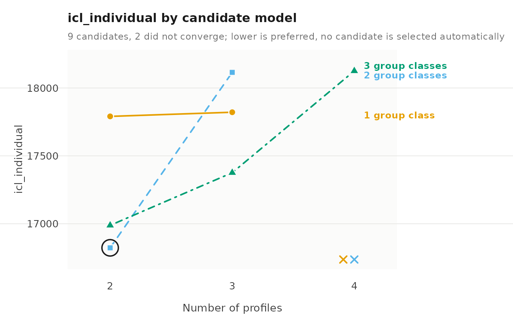
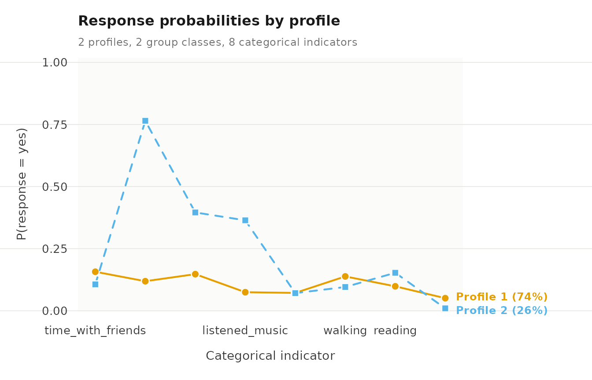
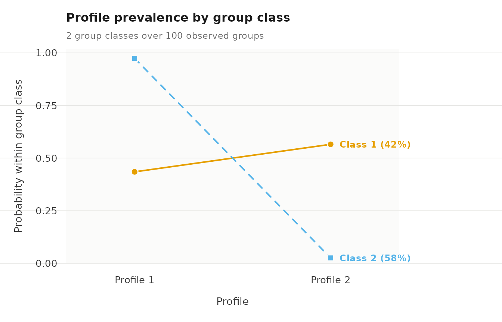

Case study: Two-level latent class analysis of leisure activities
Source:vignettes/articles/case-esm-lca.Rmd
case-esm-lca.RmdTwo-level latent class analysis estimates latent classes of categorical responses at the level of single observations and, above them, latent group classes that differ in how probable each class is for their observations. In the output the observation-level classes are called profiles. Each profile is described by the probability of every answer to every item; the group classes differ only in how often their observations fall in each profile.
The question here is whether the leisure activities that university students report in daily life form a small number of recurring patterns, and whether students differ in how often they are in each pattern.
Data
student_esm holds experience-sampling data from a study
of university students (Neubauer & Schmiedek, 2024). The students
answered six prompts a day for fourteen days. At each prompt when they
had not studied since the previous one, they reported which of eight
leisure activities they had done. The dataset holds these prompts for
100 students: 2,582 prompts, between 15 and 51 per student. Prompts are
the observations and students the groups, so a student contributes many
rows.
The eight activities are yes/no items, and they are named once so that each model can refer to them.
library(latents)
activities <- c("time_with_friends", "on_social_media", "tv_video_games",
"listened_music", "sports", "walking", "reading",
"part_time_job")summary() counts the answers to each activity item and
summarizes the other variables.
summary(student_esm)
#> student day beep time_with_friends on_social_media tv_video_games
#> Min. : 1.0 Min. : 0.00 Min. :1.00 no :2211 no :1837 no :2033
#> 1st Qu.: 27.0 1st Qu.: 3.00 1st Qu.:2.00 yes: 371 yes: 745 yes: 549
#> Median : 53.0 Median : 6.00 Median :3.00
#> Mean : 52.3 Mean : 6.48 Mean :3.06
#> 3rd Qu.: 79.0 3rd Qu.:10.00 3rd Qu.:4.00
#> Max. :100.0 Max. :13.00 Max. :5.00
#> listened_music sports walking reading part_time_job happy relaxed
#> no :2193 no :2397 no :2254 no :2291 no :2479 Min. :1.00 Min. :1.00
#> yes: 389 yes: 185 yes: 328 yes: 291 yes: 103 1st Qu.:4.00 1st Qu.:4.00
#> Median :5.00 Median :5.00
#> Mean :4.88 Mean :4.63
#> 3rd Qu.:6.00 3rd Qu.:6.00
#> Max. :7.00 Max. :7.00
#> worried exhausted
#> Min. :1.00 Min. :1.00
#> 1st Qu.:1.00 1st Qu.:2.00
#> Median :2.00 Median :3.00
#> Mean :2.29 Mean :3.31
#> 3rd Qu.:3.00 3rd Qu.:5.00
#> Max. :7.00 Max. :7.00Social media is the most frequent activity, reported at 745 of the 2,582 prompts, followed by TV or video games at 549. A part-time job is the rarest, at 103 prompts. Every item is answered “no” at most prompts, so a profile is described by how much more often than average its prompts say “yes”.
The model
For prompt of student , let be the profile and the student’s class. The model estimates three sets of probabilities:
- the response probabilities of each answer to item in profile , the same in every student class;
- the profile probabilities of each student class , which sum to one across profiles;
- the class probabilities .
The items are assumed independent given the profile, the prompts of a student independent given the student’s class, and the students independent of one another. The likelihood can have several local maxima, so each model is started from several random values. A rare answer can drive a response probability to its lower bound, and too many profiles or classes for the data show up as starts that fail to reach the same maximum.
How many profiles and classes
enumerate_classes() fits every combination of two to
four profiles and one to three student classes, each from five random
starts, and reports the information criteria and the diagnostics of each
fit. It does not choose a model.
candidates <- enumerate_classes(student_esm, vars = activities,
categorical = activities, id = "student",
n_profiles = 2:4, n_group_classes = 1:3,
n_starts = 5, seed = 1)
#> Warning: The best start did not converge; increase max_iter and see get_results(fit, "starts").
#> Warning: The best start did not converge; increase max_iter and see get_results(fit, "starts").
as.data.frame(candidates)
#> n_profiles n_group_classes model log_likelihood n_parameters aic kic bic_groups
#> 1 2 1 VVI -7892 17 15819 15839 15863
#> 2 3 1 VVI -7848 26 15749 15778 15817
#> 3 4 1 VVI -7811 35 15692 15730 15783
#> 4 2 2 VVI -7740 19 15518 15540 15567
#> 5 3 2 VVI -7686 29 15429 15461 15505
#> 6 4 2 VVI -7642 39 15363 15405 15464
#> 7 2 3 VVI -7710 21 15462 15486 15517
#> 8 3 3 VVI -7594 32 15253 15288 15336
#> 9 4 3 VVI -7535 43 15157 15203 15269
#> bic_individual sabic_groups sabic_individual caic_groups caic_individual awe_groups
#> 1 15918 15809 15864 15880 15935 15992
#> 2 15901 15735 15819 15843 15927 16014
#> 3 15897 15673 15786 15818 15932 16049
#> 4 15629 15507 15569 15586 15648 15729
#> 5 15599 15413 15507 15534 15628 15739
#> 6 15591 15341 15467 15503 15630 15774
#> 7 15585 15450 15518 15538 15606 15717
#> 8 15440 15235 15338 15368 15472 15597
#> 9 15409 15133 15272 15312 15452 15616
#> awe_individual icl_groups icl_individual clc_groups clc_individual profile_entropy group_entropy
#> 1 17975 15863 17791 15785 17657 0.477 NA
#> 2 18104 15817 17821 15697 17617 0.662 NA
#> 3 18504 15783 18124 15622 17849 0.689 NA
#> 4 17029 15584 16823 15497 16674 0.666 0.877
#> 5 18430 15519 18115 15385 17887 0.557 0.901
#> 6 18491 15477 18067 15297 17761 0.654 0.909
#> 7 17216 15557 16988 15461 16823 0.608 0.815
#> 8 17723 15354 17376 15207 17125 0.659 0.918
#> 9 18592 15289 18125 15091 17788 0.620 0.910
#> converged boundary n_best_replicated
#> 1 TRUE FALSE 2
#> 2 TRUE FALSE 2
#> 3 FALSE FALSE 1
#> 4 TRUE FALSE 5
#> 5 TRUE FALSE 1
#> 6 FALSE FALSE 1
#> 7 TRUE FALSE 5
#> 8 TRUE FALSE 1
#> 9 TRUE FALSE 1
#> warnings error
#> 1 <NA>
#> 2 <NA>
#> 3 The best start did not converge; increase max_iter and see get_results(fit, "starts"). <NA>
#> 4 <NA>
#> 5 <NA>
#> 6 The best start did not converge; increase max_iter and see get_results(fit, "starts"). <NA>
#> 7 <NA>
#> 8 <NA>
#> 9 <NA>
get_results(candidates, "criteria")
#> criterion convention n_profiles n_group_classes model value
#> 1 aic <NA> 4 3 VVI 15157
#> 2 kic <NA> 4 3 VVI 15203
#> 3 bic groups 4 3 VVI 15269
#> 4 bic individuals 4 3 VVI 15409
#> 5 sabic groups 4 3 VVI 15133
#> 6 sabic individuals 4 3 VVI 15272
#> 7 caic groups 4 3 VVI 15312
#> 8 caic individuals 4 3 VVI 15452
#> 9 awe groups 3 3 VVI 15597
#> 10 awe individuals 2 2 VVI 17029
#> 11 icl groups 4 3 VVI 15289
#> 12 icl individuals 2 2 VVI 16823
#> 13 clc groups 4 3 VVI 15091
#> 14 clc individuals 2 2 VVI 16674The criteria disagree, and the diagnostics explain why. BIC with the number of students keeps falling up to the largest model in the grid, four profiles and three classes. Most of the larger models reach their best solution from only one of the five starts, and two of the four-profile models do not converge, which the two warnings above report, so their low BIC rests on unstable solutions. The criteria that also penalize classification uncertainty (ICL, AWE and CLC counted over prompts) choose two profiles and two classes, the model whose best solution recurs in all five starts.
The ICL plot shows the same choice across the grid.
plot(candidates, criterion = "icl_individual")
The plot marks the minimum at two profiles and two classes, and the analysis continues with that model.
The chosen model
multilca() fits it, treating every item as categorical,
with ten random starts and a tight convergence tolerance, which the
standard errors below need.
lca <- multilca(student_esm, vars = activities, id = "student",
n_profiles = 2, n_group_classes = 2, n_starts = 10,
tol = 1e-10, seed = 1)
get_results(lca, "model")
#> n_observations n_informative n_groups n_profiles n_group_classes centering covariance_structure
#> 1 2582 2582 100 2 2 none VVI
#> n_parameters n_parameters_with_measurement log_likelihood aic bic_groups bic_individual
#> 1 19 19 -7740 15518 15567 15629
#> converged iterations boundary small_classes best_start n_best_replicated
#> 1 TRUE 171 FALSE FALSE 5 6The fit converges, and six of the ten starts reach the best log likelihood of -7740.
Two activity profiles
The "responses" table gives the probability of each
answer in each profile, with a “no” and a “yes” row for every item. The
“yes” rows carry the information, since the two probabilities of an item
sum to one.
get_results(lca, "responses")
#> profile indicator category probability threshold
#> 1 1 time_with_friends no 0.84297 1.680
#> 2 2 time_with_friends no 0.89379 2.130
#> 3 1 time_with_friends yes 0.15703 NA
#> 4 2 time_with_friends yes 0.10621 NA
#> 5 1 on_social_media no 0.88107 2.003
#> 6 2 on_social_media no 0.23528 -1.179
#> 7 1 on_social_media yes 0.11893 NA
#> 8 2 on_social_media yes 0.76472 NA
#> 9 1 tv_video_games no 0.85262 1.755
#> 10 2 tv_video_games no 0.60419 0.423
#> 11 1 tv_video_games yes 0.14738 NA
#> 12 2 tv_video_games yes 0.39581 NA
#> 13 1 listened_music no 0.92537 2.518
#> 14 2 listened_music no 0.63587 0.557
#> 15 1 listened_music yes 0.07463 NA
#> 16 2 listened_music yes 0.36413 NA
#> 17 1 sports no 0.92813 2.558
#> 18 2 sports no 0.92897 2.571
#> 19 1 sports yes 0.07187 NA
#> 20 2 sports yes 0.07103 NA
#> 21 1 walking no 0.86178 1.830
#> 22 2 walking no 0.90438 2.247
#> 23 1 walking yes 0.13822 NA
#> 24 2 walking yes 0.09562 NA
#> 25 1 reading no 0.90161 2.215
#> 26 2 reading no 0.84712 1.712
#> 27 1 reading yes 0.09839 NA
#> 28 2 reading yes 0.15288 NA
#> 29 1 part_time_job no 0.94938 2.931
#> 30 2 part_time_job no 0.99024 4.619
#> 31 1 part_time_job yes 0.05062 NA
#> 32 2 part_time_job yes 0.00976 NAThe two profiles differ mainly in media use. At prompts in profile 2, students used social media with probability 0.765, watched TV or played video games with probability 0.396, and listened to music with probability 0.364. In profile 1 the same probabilities are 0.119, 0.147 and 0.075. Profile 1 is slightly more likely to include time with friends (0.157 against 0.106), walking (0.138 against 0.096) and a part-time job (0.051 against 0.010), and both profiles report sports at 0.07. Profile 2 is therefore a media-heavy pattern, and profile 1 a pattern of little media use with the remaining activities at their usual low rates.
The response plot draws the same probabilities, one line per profile across the items.
plot(lca, what = "responses")
The lines separate on the three media items and nearly coincide on sports, so the media items carry almost all of the difference between the profiles.
Two student classes
The "counts" table gives the size of each profile and
class, and the "profile_probabilities" table the profile
mix of each student class.
get_results(lca, "counts")
#> level class effective_count effective_proportion
#> 1 individuals 1 1903.9 0.737
#> 2 individuals 2 678.1 0.263
#> 3 groups 1 41.6 0.416
#> 4 groups 2 58.4 0.584
get_results(lca, "profile_probabilities")
#> group_class profile probability group_class_probability
#> 1 1 1 0.435 0.416
#> 2 1 2 0.565 0.416
#> 3 2 1 0.974 0.584
#> 4 2 2 0.026 0.584The low-media profile holds 73.7% of prompts and the media-heavy profile 26.3%. The student classes differ sharply in their mix. In class 2, which holds 58.4% of students, 0.974 of prompts fall in the low-media profile. In class 1, with 41.6% of students, the media-heavy profile is the more common, at 0.565. Media-heavy leisure is therefore concentrated in a minority of students, and for them it is the usual pattern, while most students almost never report it.
The probability plot compares the two mixes.
plot(lca, what = "probabilities")
Class 2 runs close to one on the low-media profile and close to zero on the media-heavy one; class 1 divides its prompts more evenly, with the larger share on the media-heavy profile.
Classification certainty
Profiles and classes are estimated as posterior probabilities.
Relative entropy summarizes how concentrated those probabilities are,
from 0 for no separation to 1 for certain assignment, and the
"classification" table reports the average posterior
probability of each assigned class.
get_results(lca, "entropy")
#> level n_classes n_units entropy_sum relative_entropy
#> 1 individuals 2 2582 594.46 0.668
#> 2 groups 2 100 8.49 0.877
get_results(lca, "classification")
#> level class n_modal proportion_modal estimated_n estimated_proportion average_posterior
#> 1 individuals 1 1961 0.759 1903.9 0.737 0.926
#> 2 individuals 2 621 0.241 678.1 0.263 0.859
#> 3 groups 1 40 0.400 41.6 0.416 0.980
#> 4 groups 2 60 0.600 58.4 0.584 0.960
#> odds_correct_classification
#> 1 4.47
#> 2 17.07
#> 3 68.28
#> 4 17.09Relative entropy is 0.668 for prompts and 0.877 for students. A single prompt answers eight yes/no questions, which leaves its profile uncertain; a student contributes many prompts, which pins down the class. The average posterior probability is 0.926 for prompts assigned to the low-media profile and 0.859 for the media-heavy one, and 0.980 and 0.960 for the two student classes. Conclusions about students are therefore well supported, while an analysis of individual prompts should carry the posterior probabilities forward.
Local independence
The model assumes the items are independent within a profile. The
"residuals" table measures the association that each pair
of items keeps within a profile, with a chi-square test for each pair;
the ten largest are shown.
get_results(lca, "residuals") |> head(10)
#> profile indicator_1 indicator_2 kind observed expected residual effective_n
#> 1 profile_2 sports walking categorical 0.1707 1.97e-16 0.1707 678
#> 2 profile_2 time_with_friends walking categorical 0.1404 1.86e-16 0.1404 678
#> 3 profile_2 listened_music walking categorical 0.1334 2.21e-16 0.1334 678
#> 4 profile_2 listened_music reading categorical 0.1063 4.44e-17 0.1063 678
#> 5 profile_2 listened_music sports categorical 0.1045 1.09e-16 0.1045 678
#> 6 profile_1 tv_video_games walking categorical 0.0940 4.35e-17 0.0940 1904
#> 7 profile_1 tv_video_games part_time_job categorical 0.0925 1.08e-17 0.0925 1904
#> 8 profile_1 time_with_friends part_time_job categorical 0.0865 4.18e-17 0.0865 1904
#> 9 profile_1 time_with_friends reading categorical 0.0727 8.08e-17 0.0727 1904
#> 10 profile_1 reading part_time_job categorical 0.0682 3.74e-17 0.0682 1904
#> statistic df p_value p_adjusted
#> 1 19.75 1 8.82e-06 8.82e-06
#> 2 13.37 1 2.55e-04 2.55e-04
#> 3 12.07 1 5.13e-04 5.13e-04
#> 4 7.67 1 5.63e-03 5.63e-03
#> 5 7.41 1 6.50e-03 6.50e-03
#> 6 16.83 1 4.08e-05 4.08e-05
#> 7 16.28 1 5.47e-05 5.47e-05
#> 8 14.25 1 1.60e-04 1.60e-04
#> 9 10.07 1 1.51e-03 1.51e-03
#> 10 8.87 1 2.90e-03 2.90e-03The largest residual is 0.171, between sports and walking in the media-heavy profile, followed by friends and walking (0.140) and music and walking (0.133) in the same profile. Physical and social activities occur together more often than two profiles allow, which is a limit of a two-profile model and one reason BIC rewards larger models: extra profiles can absorb this association.
Uncertainty in the response probabilities
parameter_inference() gives standard errors and 95% Wald
intervals for every parameter. The intervals of the “yes” probabilities,
in the rows whose term ends in :yes, show how
firmly the profiles are distinguished.
parameter_inference(lca)
#> level outcome term parameter estimate standard_error statistic
#> 1 measurement profile_1 time_with_friends:no response 0.84297 0.00925 NA
#> 2 measurement profile_1 time_with_friends:yes response 0.15703 0.00925 NA
#> 3 measurement profile_2 time_with_friends:no response 0.89379 0.01497 NA
#> 4 measurement profile_2 time_with_friends:yes response 0.10621 0.01497 NA
#> 5 measurement profile_1 on_social_media:no response 0.88107 0.01902 NA
#> 6 measurement profile_1 on_social_media:yes response 0.11893 0.01902 NA
#> 7 measurement profile_2 on_social_media:no response 0.23528 0.03509 NA
#> 8 measurement profile_2 on_social_media:yes response 0.76472 0.03509 NA
#> 9 measurement profile_1 tv_video_games:no response 0.85262 0.01013 NA
#> 10 measurement profile_1 tv_video_games:yes response 0.14738 0.01013 NA
#> 11 measurement profile_2 tv_video_games:no response 0.60419 0.02466 NA
#> 12 measurement profile_2 tv_video_games:yes response 0.39581 0.02466 NA
#> 13 measurement profile_1 listened_music:no response 0.92537 0.00780 NA
#> 14 measurement profile_1 listened_music:yes response 0.07463 0.00780 NA
#> 15 measurement profile_2 listened_music:no response 0.63587 0.03056 NA
#> 16 measurement profile_2 listened_music:yes response 0.36413 0.03056 NA
#> 17 measurement profile_1 sports:no response 0.92813 0.00660 NA
#> 18 measurement profile_1 sports:yes response 0.07187 0.00660 NA
#> 19 measurement profile_2 sports:no response 0.92897 0.01283 NA
#> 20 measurement profile_2 sports:yes response 0.07103 0.01283 NA
#> 21 measurement profile_1 walking:no response 0.86178 0.00885 NA
#> 22 measurement profile_1 walking:yes response 0.13822 0.00885 NA
#> 23 measurement profile_2 walking:no response 0.90438 0.01475 NA
#> 24 measurement profile_2 walking:yes response 0.09562 0.01475 NA
#> 25 measurement profile_1 reading:no response 0.90161 0.00768 NA
#> 26 measurement profile_1 reading:yes response 0.09839 0.00768 NA
#> 27 measurement profile_2 reading:no response 0.84712 0.01847 NA
#> 28 measurement profile_2 reading:yes response 0.15288 0.01847 NA
#> 29 measurement profile_1 part_time_job:no response 0.94938 0.00532 NA
#> 30 measurement profile_1 part_time_job:yes response 0.05062 0.00532 NA
#> 31 measurement profile_2 part_time_job:no response 0.99024 0.00494 NA
#> 32 measurement profile_2 part_time_job:yes response 0.00976 0.00494 NA
#> 33 profile profile_1 group_class_1 probability 0.43468 0.03608 NA
#> 34 profile profile_2 group_class_1 probability 0.56532 0.03608 NA
#> 35 profile profile_1 group_class_2 probability 0.97404 0.01743 NA
#> 36 profile profile_2 group_class_2 probability 0.02596 0.01743 NA
#> 37 group group_class_1 <NA> probability 0.41595 0.06007 NA
#> 38 group group_class_2 <NA> probability 0.58405 0.06007 NA
#> p_value p_adjusted conf_low conf_high
#> 1 NA NA 8.25e-01 0.8611
#> 2 NA NA 1.39e-01 0.1752
#> 3 NA NA 8.64e-01 0.9231
#> 4 NA NA 7.69e-02 0.1356
#> 5 NA NA 8.44e-01 0.9184
#> 6 NA NA 8.16e-02 0.1562
#> 7 NA NA 1.67e-01 0.3040
#> 8 NA NA 6.96e-01 0.8335
#> 9 NA NA 8.33e-01 0.8725
#> 10 NA NA 1.28e-01 0.1672
#> 11 NA NA 5.56e-01 0.6525
#> 12 NA NA 3.47e-01 0.4442
#> 13 NA NA 9.10e-01 0.9407
#> 14 NA NA 5.93e-02 0.0899
#> 15 NA NA 5.76e-01 0.6958
#> 16 NA NA 3.04e-01 0.4240
#> 17 NA NA 9.15e-01 0.9411
#> 18 NA NA 5.89e-02 0.0848
#> 19 NA NA 9.04e-01 0.9541
#> 20 NA NA 4.59e-02 0.0962
#> 21 NA NA 8.44e-01 0.8791
#> 22 NA NA 1.21e-01 0.1556
#> 23 NA NA 8.75e-01 0.9333
#> 24 NA NA 6.67e-02 0.1245
#> 25 NA NA 8.87e-01 0.9167
#> 26 NA NA 8.33e-02 0.1134
#> 27 NA NA 8.11e-01 0.8833
#> 28 NA NA 1.17e-01 0.1891
#> 29 NA NA 9.39e-01 0.9598
#> 30 NA NA 4.02e-02 0.0610
#> 31 NA NA 9.81e-01 0.9999
#> 32 NA NA 7.44e-05 0.0194
#> 33 NA NA 3.64e-01 0.5054
#> 34 NA NA 4.95e-01 0.6360
#> 35 NA NA 9.40e-01 1.0082
#> 36 NA NA -8.20e-03 0.0601
#> 37 NA NA 2.98e-01 0.5337
#> 38 NA NA 4.66e-01 0.7018The profiles are clearly separated on the media items: the interval for social media is 0.696 to 0.834 in the media-heavy profile and 0.082 to 0.156 in the low-media profile. On sports the two intervals overlap almost entirely. The part-time-job probability in the media-heavy profile has an interval starting at 0.0001, close to the bound, because very few of its prompts report a job.
Adding affect
A mixed model adds three affect ratings (happy, relaxed, exhausted,
each from 1 to 7) as continuous indicators. worried is left
out because about half of its ratings are 1, which can push a profile’s
variance to its lower bound.
mixed <- multilpa(student_esm,
vars = c("happy", "relaxed", "exhausted", activities),
categorical = activities, id = "student", n_profiles = 2,
n_group_classes = 2, n_starts = 10, seed = 1)
get_results(mixed)
#> profile indicator mean variance standard_deviation
#> 1 1 happy 5.85 0.75 0.866
#> 2 1 relaxed 5.59 1.19 1.090
#> 3 1 exhausted 2.55 2.25 1.499
#> 4 2 happy 3.58 1.95 1.395
#> 5 2 relaxed 3.33 1.85 1.362
#> 6 2 exhausted 4.33 2.82 1.679
get_results(mixed, "responses")
#> profile indicator category probability threshold
#> 1 1 time_with_friends no 0.8119 1.462
#> 2 2 time_with_friends no 0.9158 2.387
#> 3 1 time_with_friends yes 0.1881 NA
#> 4 2 time_with_friends yes 0.0842 NA
#> 5 1 on_social_media no 0.7313 1.001
#> 6 2 on_social_media no 0.6848 0.776
#> 7 1 on_social_media yes 0.2687 NA
#> 8 2 on_social_media yes 0.3152 NA
#> 9 1 tv_video_games no 0.7928 1.342
#> 10 2 tv_video_games no 0.7801 1.266
#> 11 1 tv_video_games yes 0.2072 NA
#> 12 2 tv_video_games yes 0.2199 NA
#> 13 1 listened_music no 0.8353 1.624
#> 14 2 listened_music no 0.8681 1.884
#> 15 1 listened_music yes 0.1647 NA
#> 16 2 listened_music yes 0.1319 NA
#> 17 1 sports no 0.9094 2.306
#> 18 2 sports no 0.9538 3.027
#> 19 1 sports yes 0.0906 NA
#> 20 2 sports yes 0.0462 NA
#> 21 1 walking no 0.8497 1.732
#> 22 2 walking no 0.9042 2.244
#> 23 1 walking yes 0.1503 NA
#> 24 2 walking yes 0.0958 NA
#> 25 1 reading no 0.8911 2.102
#> 26 2 reading no 0.8822 2.014
#> 27 1 reading yes 0.1089 NA
#> 28 2 reading yes 0.1178 NA
#> 29 1 part_time_job no 0.9684 3.423
#> 30 2 part_time_job no 0.9490 2.923
#> 31 1 part_time_job yes 0.0316 NA
#> 32 2 part_time_job yes 0.0510 NA
get_results(mixed, "profile_probabilities")
#> group_class profile probability group_class_probability
#> 1 1 1 0.833 0.631
#> 2 1 2 0.167 0.631
#> 3 2 1 0.127 0.369
#> 4 2 2 0.873 0.369With affect included, the profiles become profiles of mood. Profile 1 has mean ratings of 5.85 for happy, 5.59 for relaxed and 2.55 for exhausted; profile 2 has 3.58, 3.33 and 4.33. The activities now differ less and in a different way: time with friends is reported at 0.188 of profile-1 prompts and 0.084 of profile-2 prompts, social media at 0.269 and 0.315. Good mood goes with social time more than with media use. The student classes remain distinct: 0.833 of the prompts of class 1 fall in the good-mood profile, and 0.873 of those of class 2 in the low-mood profile. The profiles a model finds are set by the indicators it is given, so the choice of indicators is part of the question.
Interpretation
Students’ leisure at non-study prompts falls into two patterns, one defined by social media, TV and music and one with little media use. The distinction that matters most is between students: a majority almost never reports the media-heavy pattern, and a minority reports it at more than half of their prompts. That student-level result is well supported by the classification diagnostics, while the assignment of any single prompt is uncertain.
Limitations
The data contain only prompts at which the student had not studied, so the patterns describe leisure time, not the whole day. The two-profile model leaves association between physical and social activities within its profiles, and larger models fit better by BIC but are not stable across starts on these data. Prompts are treated as independent given the student’s class, so the model ignores the order of prompts within a day. The associations are observational and say nothing about causes.
Reference
Neubauer, A. B., & Schmiedek, F. (2024). Approaching academic adjustment on multiple time scales. Zeitschrift für Erziehungswissenschaft, 27(1), 147-168. https://doi.org/10.1007/s11618-023-01182-8